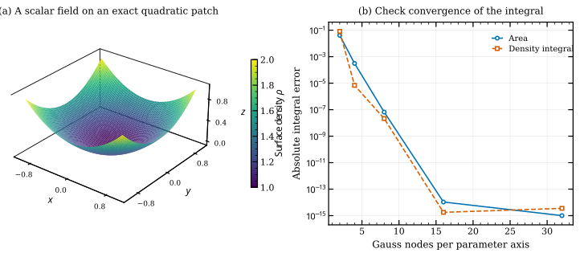

Surface area and surface integrals#
Surface integration converts a calculation in parameter space into a physical
area calculation. Applications include wetted area, distributed mass, heat
transfer and flux through a patch. nurbspy supplies the surface and its
analytic partial derivatives; it currently has no dedicated surface-area or
general surface-integration method. The calculations below assemble the
integral from those existing operations.
The area scale factor#
Let \(\mathbf S(u,v)\) be a regular 3D patch. A small parameter rectangle maps approximately to the parallelogram spanned by \(\mathbf S_u\,du\) and \(\mathbf S_v\,dv\). Its area is
Thus, over a parameter domain \(D\),
The parameter rectangle’s area is not the physical surface area. Likewise, averaging a quantity over uniformly spaced \((u,v)\) samples without \(J_A\) generally gives a parameter-weighted average, not a physical area average.
The surface metric gives the equivalent expression \(J_A=\sqrt{EG-F^2}\), where \(E=\mathbf S_u\cdot\mathbf S_u\), \(F=\mathbf S_u\cdot\mathbf S_v\) and \(G=\mathbf S_v\cdot\mathbf S_v\). The cross-product form avoids explicitly subtracting two potentially close large numbers. It still becomes ill-conditioned near a collapsed patch.
Scalar fields, averages and flux#
For a scalar field \(f\) evaluated on the surface,
Setting \(f=1\) gives area. Taking \(f=\rho\) gives mass for an areal density \(\rho\). The physical area average is \(I_f/A\). A field may also be supplied directly as \(f(u,v)\) when its definition is attached to the parameterization.
For a vector field \(\mathbf q\), oriented flux is
Here \(\mathbf n\) follows \(\mathbf S_u\times\mathbf S_v\). Reversing one parameter direction reverses flux orientation but leaves scalar area unchanged.


The exact quadratic patch \(z=(x^2+y^2)/2\) over \([-1,1]^2\), colored by \(\rho=1+(x^2+y^2)/2\). The right panel compares derivative-based tensor Gauss integration with independent integration of the analytic graph Jacobian \(\sqrt{1+x^2+y^2}\). Nodes and weights change; the NURBS geometry is unchanged.#
A knot-aware quadrature recipe#
A tensor Gauss rule forms products of one-dimensional nodes and weights. Split at both sets of knots so each panel lies within one smooth knot rectangle. For a rectangle \([a,b]\times[c,d]\), reference nodes \(\xi_i,\eta_j\) on \([-1,1]\) map to physical parameters; the integral is approximated by
The following recipe works with a NumPy surface. It is ordinary application code, not a new package API:
import numpy as np
from numpy.polynomial.legendre import leggauss
def surface_integral(surface, field, order=16):
nodes, weights = leggauss(order)
U = np.unique(surface.U[surface.p:len(surface.U)-surface.p])
V = np.unique(surface.V[surface.q:len(surface.V)-surface.q])
total = 0.0
for a, b in zip(U[:-1], U[1:]):
for c, d in zip(V[:-1], V[1:]):
us = (a+b)/2 + (b-a)*nodes/2
vs = (c+d)/2 + (d-c)*nodes/2
u, v = np.meshgrid(us, vs, indexing="ij")
u, v = u.ravel(), v.ravel()
xyz = surface.get_value(u, v)
su = surface.get_derivative(u, v, 1, 0)
sv = surface.get_derivative(u, v, 0, 1)
jacobian = np.linalg.norm(np.cross(su, sv, axis=0), axis=0)
w = np.outer(weights, weights).ravel() * (b-a)*(d-c)/4
total += np.sum(w * field(xyz) * jacobian)
return total
# With an existing surface:
# area = surface_integral(surface, lambda xyz: np.ones(xyz.shape[1]))
# mass = surface_integral(surface, lambda xyz: 1 + xyz[2]**2)
The field returns one scalar per sample. The derivatives have shape (3,N);
the cross product uses axis=0 so the coordinate dimension is interpreted
correctly. The active limits are \([U_p,U_{-p-1}]\) and
\([V_q,V_{-q-1}]\), which need not be \([0,1]\).
The same mathematics applies to JAX. To differentiate repeated-design
integrals efficiently, prepare first-derivative surface tables at the chosen
nodes using prepare_surface(..., max_order_u=1, max_order_v=1, grid=True).
Supply changing control points and weights to the table, calculate \(J_A\),
then contract with the quadrature weights. Rebuild tables when knots, degrees,
nodes or layout change. Fixed tables do not provide an adaptive error estimate.
Accuracy and interpretation#
Increase order or subdivide knot rectangles and check whether the result stabilizes. Compare against an exact plane, cylinder, sphere or another independent reference when possible. Two fixed rules can miss the same narrow rational feature, so apparent agreement is evidence rather than a certificate. Highly anisotropic patches and large weight ratios deserve additional checks.
Regularity requires \(J_A>0\). Scalar area can still exist at isolated degenerate points, but unit normals and curvature may not. Flux can often be evaluated directly using the vector area element without normalizing it.
These formulas integrate the parameterized sheet. If the map covers the same physical region more than once, the integral counts that coverage more than once. Summing areas of overlapping patches similarly double-counts overlap. Trimming and union-area calculations require additional geometry operations outside the scope of these untrimmed tensor-product patches.
Reproduce the figure#
python docs/generate_theory_images.py --only surface_integrals
The figure script checks area and
density integrals against independent SciPy integration. It also checks that
the upward flux of a constant vertical unit field equals the projected area,
four. Download the vector PDF.